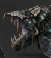
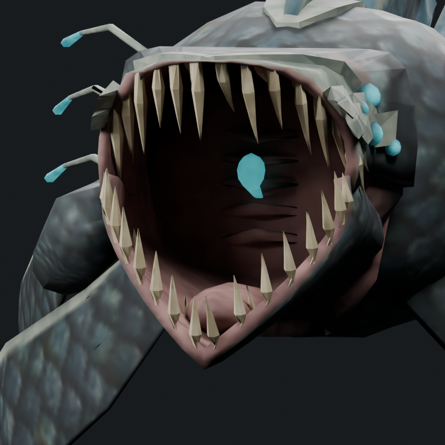
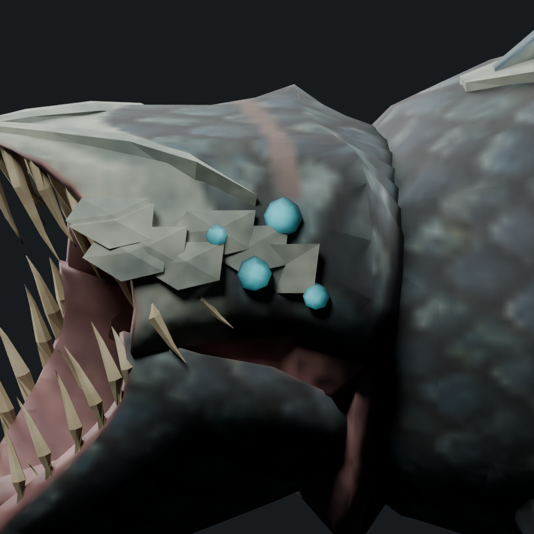
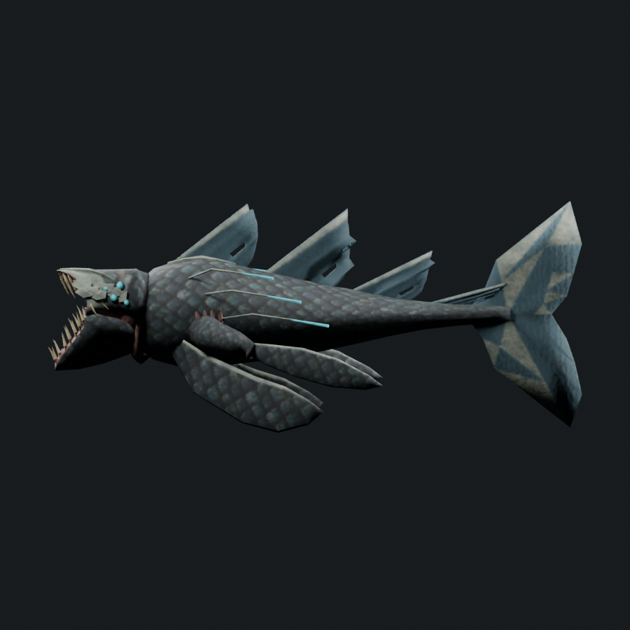
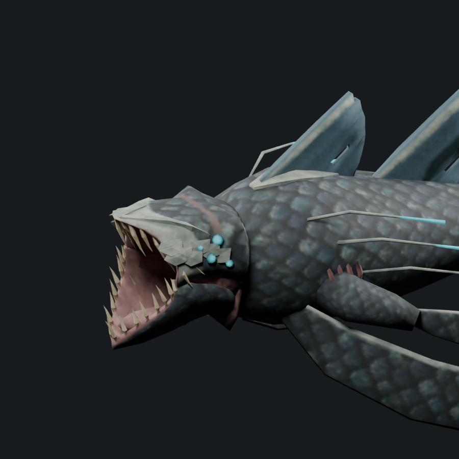

Uneven tapered fangs now have thicker shafts. Upper fangs sweep back into the mouth; lower fangs have a gentler forward rake. Their original gum attachments remain seated. Rounded cyan bulbs occupy an uneven rear-cheek cluster, with darker socket edges and shaded highlights.
The smaller head, low mouth brow, scaled rear head, small crown nub and separated feelers are retained. The final texture maps remain 512px; an offline 1024px bake is reduced for smoother small details.
7,109 triangles · 1.459× Serpent · cap 7,308. One mesh/material and four 512px maps. 123 attachment records pass 65 sampled poses across 13 actions. This remains an art candidate for concept review; native performance is unverified.







Editable model · Skinned export · Recorded changes · Geometry checks · Attachment checks · Previous face revision